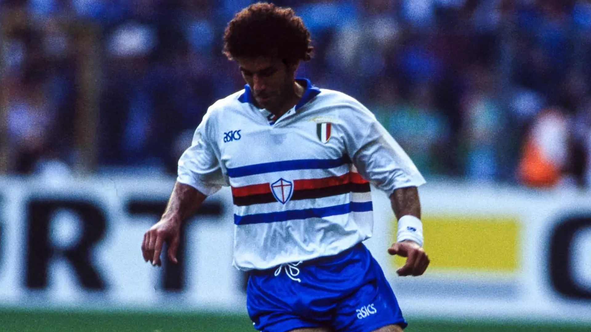

UC Sampdoria Away Kit
1990

Embarking on a journey to the vibrant city of Genoa, I found myself immersed in the pinnacle of Sampdoria's footballing prowess. The anticipation was tangible as I navigated the lively streets, making my way to the revered Stadio Luigi Ferraris. The aura surrounding the stadium resonated with the fervor of passionate fans, and the experience of witnessing Sampdoria in their prime was nothing short of electrifying. Venturing into the team store, I was captivated by the iconic Sampdoria kit, a symbol of the club's rich heritage. The distinctive blue jersey adorned with the trademark white, red, and black stripes instantly became more than just a piece of sportswear; it embodied the essence of Sampdoria's footballing identity. As I proudly donned the kit, I felt an immediate connection to the collective spirit of the fans and the storied history of the club. The match itself unfolded as a captivating spectacle of skill and teamwork, further enhancing the allure of my Sampdoria experience. The kit, now a cherished keepsake, serves as a tangible reminder of the exhilarating travel and the indelible memories forged during my immersion into Sampdoria's footballing prime.